Managing Building Operations
Project Timeline
Spring 2020 (1 week)
Project Type
Design Challenge
Role
Research, UX/UI Design, Visual Design
Challenge
Design an experience that allows students and management to report and address building or equipment issues on campus
Solution
A Progressive Web App that aims to improve student and management communications and reporting of campus issues
Outcome
Passed the Google UX Design Challenge 2020 for project matching
A solution for building operations and school campuses.
Managing building operations is an exploratory solution to the Google 2020 UX Design challenge this year.
There's a lack of social accountability for shared spaces. Not yours? Not your problem 👀
Based on my school, UBC online services is a progressive web app that allows campus-goers and building maintenance to communicate and resolve campus issues.
Process ↯
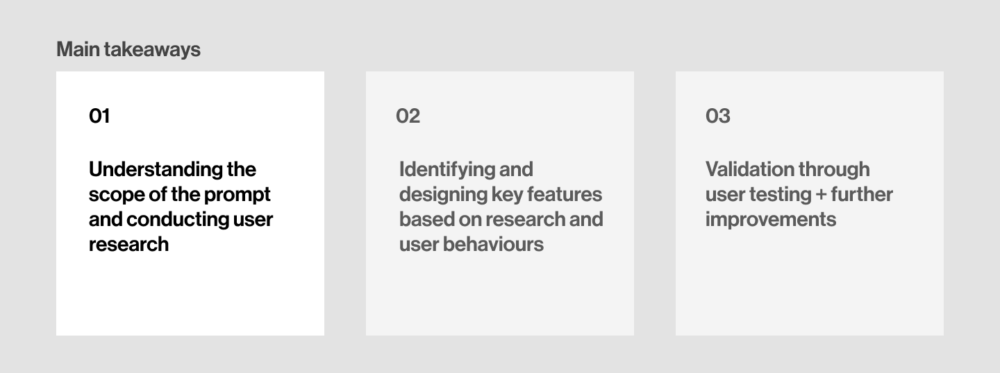Why is that? What's the current interaction like between students and building management? If there was better communication and faciliation between the 2 parties, what are the consequences? First, it was important to understand exactly what problem I was solving for, why it's important and its project scope.
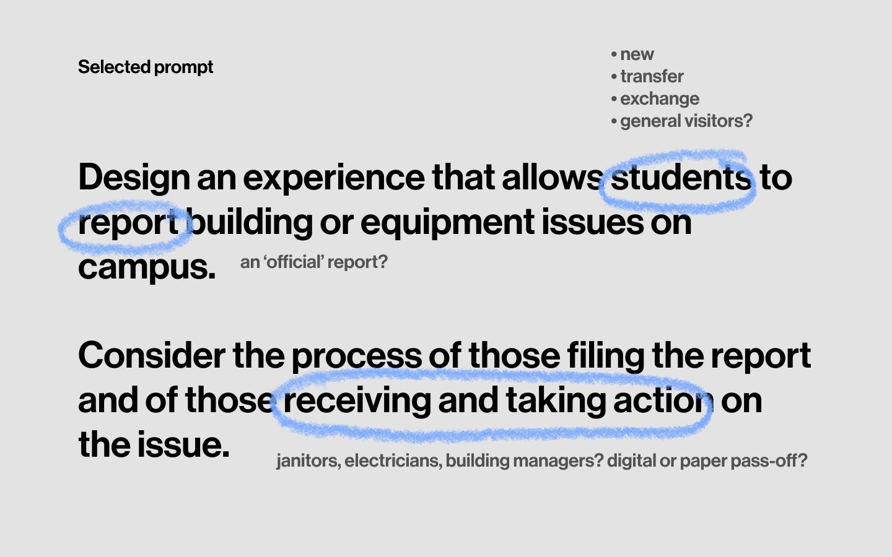Key User Insights
A quick brainstorm of the prompt allowed me to understand that I was designing for both the individuals reporting the issues, as well as the management resolving the issues. This led me to conduct interviews and surveys with both sides - campus-goers, and school operations/management.
How are students, faculty and campus visitors currently dealing with reporting campus issues?
01 - Students don't report campus facilities issues.
Current methods of reporting facilities for maintenance or repair is trhough tweeting, emailing or calling. The alternative is to submit a form online.
Most students report that it's too much work, inconvenient and assume that someone else will report the issue. Plus, "I don't want people to see that I'm tweeting about a bathroom issue" 🙈
How can we make it easier for students to report these problems, and help encourage social responsibility?
02 - Students are on the go, and don't have time to fill out a form or email.
Students never stay in the same building/facilities for too long and don’t actively seek out reporting facilities issues unless the issue personally impacts them.
Following this user behaviour, we should create an experience on a platform that encourages faster reporting.
How can we ensure that this product allows users to report their issue efficiently and quickly?
How are building operations and maintenance working with this situation from their end?
03 - When students do report issues, the info is triaged and manually assigned to the appropriate crew.
Crew members also make reports in their daily line of work, and these are reported internally.
In addition, tasks and requests are re-assigned to appropriate crew members to their respective buildings within a zoning system. However, most of these processes are manual and inefficient.
How can we improve the workflow and task distribution for Operations crew members?
04 - If a request service is submitted online, then the requestor can receive a completion status. All other requests are unable to recieve an update status.
Incoming requests eg. tweets, emails are converted to a service request, which is then assigned.
However, the current system does not allow students or visitors to make service requests, only faculty members and school employees. Requests made are addressed according to their priority but the status of the request is often not updated.
How can we increase communications between requesters and crew members under the goal of resolving requests?
Product goals (3)
With these insights in mind, I decided that the primary goals should ease the process of reporting, receiving and updating requests. Also keep in mind accessibility issues.
1)Help students report issues quickly and easily
2)Allow campus workers to recieve their assigned tasks directly
3)Indicate an issue fix/completion status
Create a solution that is applicable to a wide range of campus facilities issues.
During my brainstorming, I thought about different methods of reporting, such as buttons, a built-in wall interface, alert sensors or apps.
The most optimal solution from that was a digital platform, as buttons, sensors or interfaces would mean that they are powered or limited to buildings. Those applications won’t be useful for reporting issues such as fallen trees or snow blockage.
That led to the question of: which digital platform?
User interviews indicated that most students would not download an app.
The method of reporting should be accessible and flexible for it to be quick and easy to use. This indicated to me that building the student portal as a Progressive Web App (PWA) would be the most optimal solution as it is fast to build, easy to maintain, and send data securely.
However, for the management portal, an app would be a better choice as the requests are daily, more functions need to be performed and the facilities system is complex.
A PWA provided an optimal solution, as the onboarding process for reporting problems can begin by using the phone camera to scan a QR code.
In addition, QR codes can be added anywhere (eg. washroom, outside on a post, at school parking lots, etc.) and can be easily updated. Certain QR codes can also implement geotags, which can further reduce the friction to reporting.
I did not choose a mandatory log-in to school account process because my interviews indicated that students would like an option as to include their identity in a request. A log-in would also take more time and discourage students to report facility issues.
Wireframes: User Flow
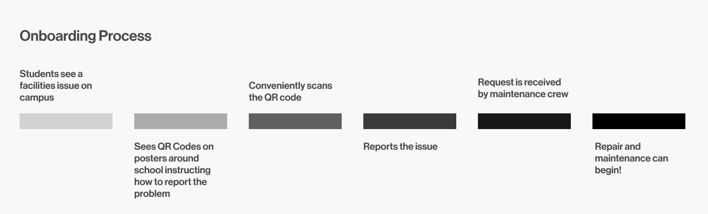For Students:
An analysis of interview data, contextual understanding and user behaviour narrowed the PWA features into 3 problem categories: common issues, specific issues and emergencies.
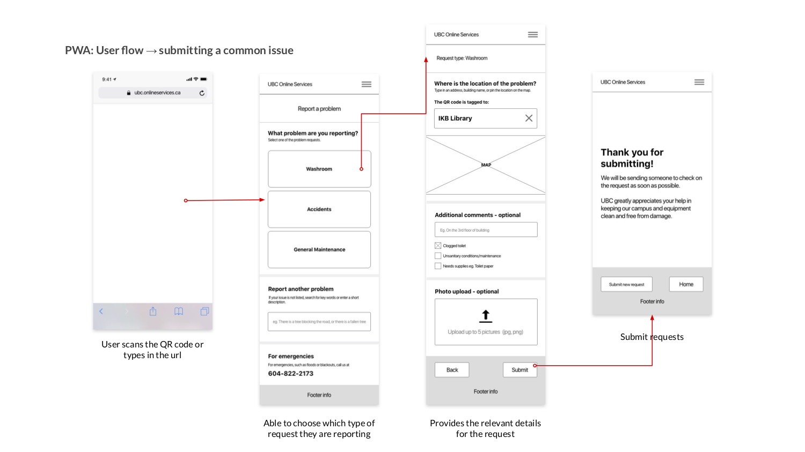 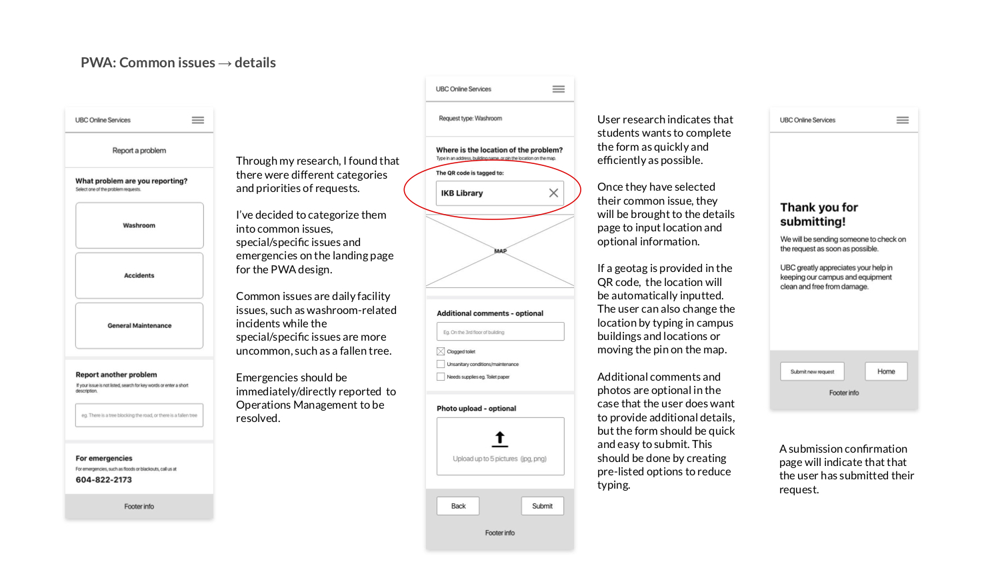 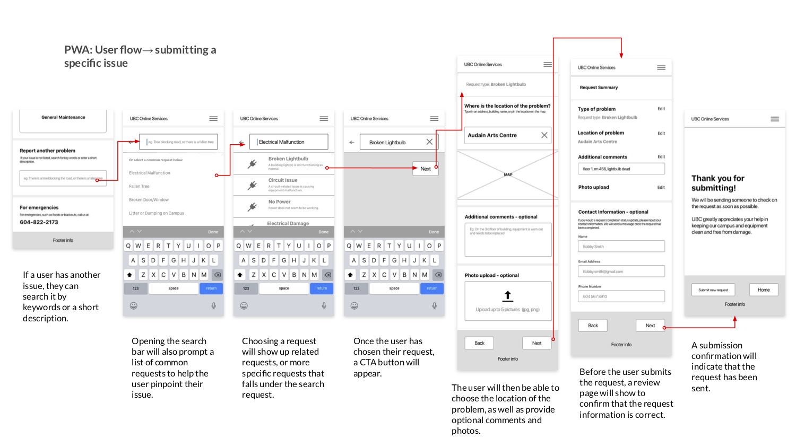 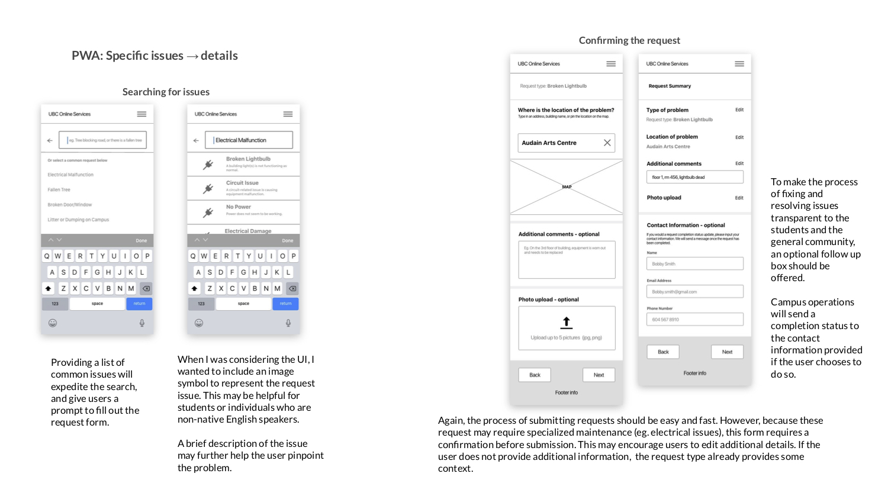For Operations & Management
Through the replies from UBC and secondary research, I know that campus operations are managed by many departments, such as: trades, municipal services, custodial services, customer services and more. Each department takes care of different campus facilities and operations.
Maintenance workers are assigned to designated buildings/campus zones.
For this exercise, I will focus on designing an interface geared towards custodians. This means that requests made for a certain building/zone will fall under an assigned custodian’s role. However, for different services, the interfaces will be altered appropriately to reflect their specializations.
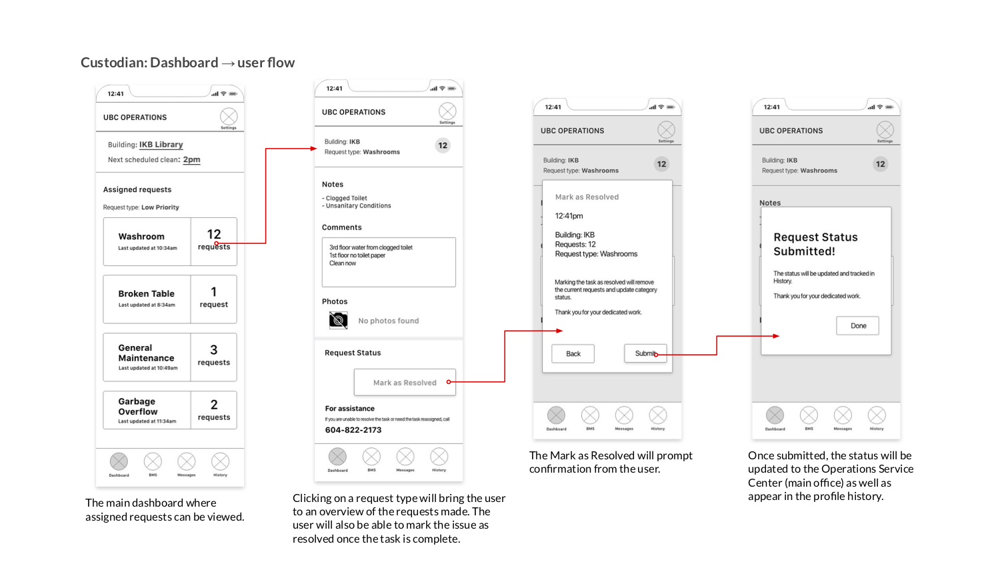 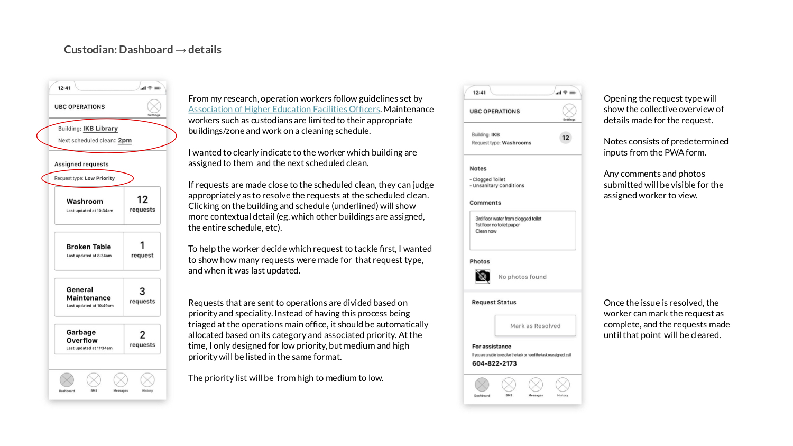 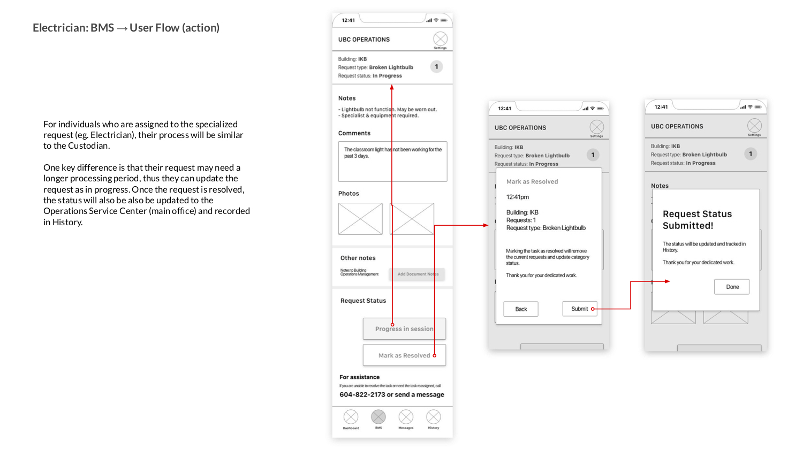
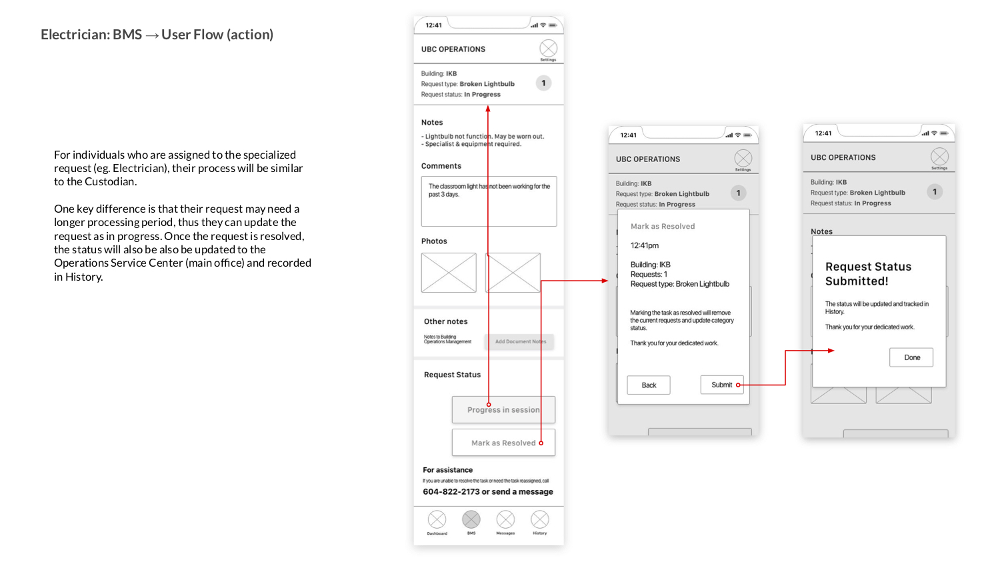
Visual: Mockups
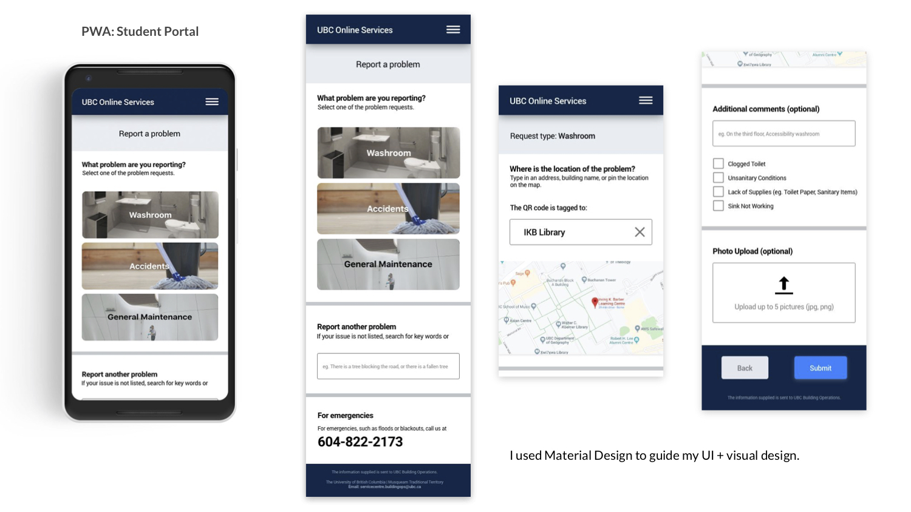 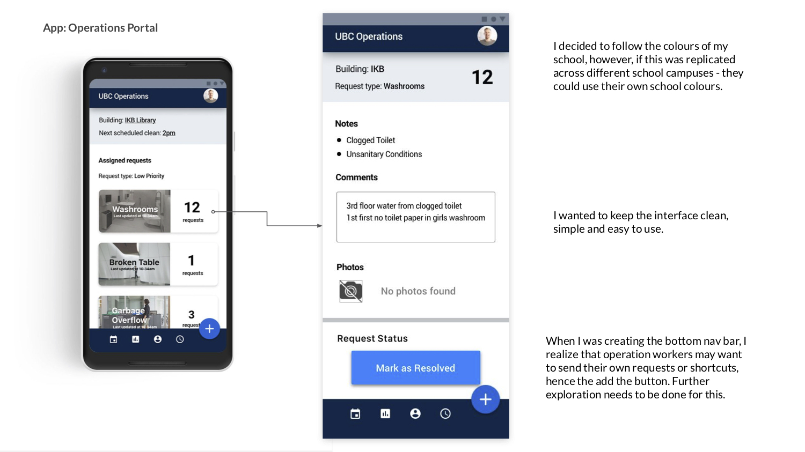 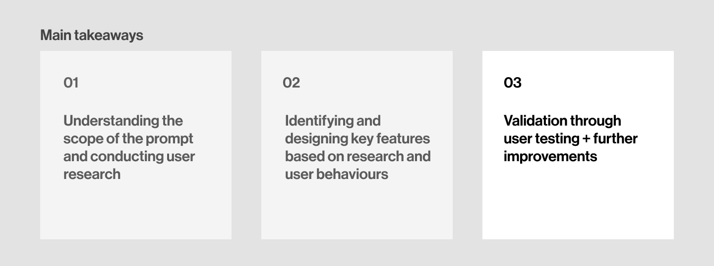Future Considerations: Status & Desktop
The interfaces for messages, history and settings were not created since they will be similar to what a user might typically expect from an app. The history page is simply a record of their resolved requests.
For the status updates, I’ve created a desktop version of what it might look like for students. The desktop version will be an expanded version of the PWA.
When a student is roaming on the map, it will show other submitted requests around on campus.
The current status, request type, location and date will be shown. If there was more time, user testing can be done to see if a feature like this would be something students check on their phones.
But what about student motivation?
After the wireframes were created, I tried to gain quick user feedback by asking a couple students what they think of the PWA portal.
Most of them commented at the ease of use, but some also commented that they would still not report campus facility issues due to low social responsibility and that they would avoid the issue.
To encourage student motivation, school campuses can increase awareness about the cost of facility maintenance (eg. $10, 000 a year is spent on facility repairs. By keeping our school clean and maintained, we can re-allocate these funds to updating our swimming pool.) Rewards or prizes through the PWA can also be an additional incentive.
Measuring impact!
For students: that could mean how many reports have been made, what are the analytics for the PWA and whether the experiences of campus-goers have improved due to better facility management.
For operations: has the workflow improved? are reduncies removed? $$ saved for the school due to more efficient facility management?
If I could further explore this, I would like to investigate how the designs I made will impact the system of campus maintenance, and whether that holds significant value. I’m also curious about how this incorporates service design, and whether this is accessible for people with different needs (who cannot use a phone and QR code to report issues).
This was a fun experience that encouraged me to think about the greater ecosystem that the problem exists in, and how to approach a solution that might not have the greatest user motivation!